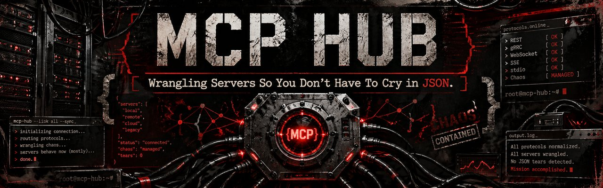

Wrangle every MCP server. Lose none of the signal.
Connect servers, inspect tools, test calls, and shape repeatable workflows from one honest control room.
Open sourceMobile firstNo fake green lights

01 // SIGNAL PATH
From endpoint to execution.
- 01
Connect
Add a workspace-owned HTTPS endpoint, choose its authentication, and test the connection.
- 02
Discover
Inspect the tools a server actually exposes, including inputs and schemas.
- 03
Execute
Send targeted calls through the authorized runtime and see honest results.
- 04
Repeat
Turn successful work into durable drafts while the workflow engine earns its sharp teeth.
02 // CONTROL ROOM
See the whole damn signal path.
Connection state, tool schemas, inputs, and results belong in one view—not scattered across twelve tabs and a prayer.
Select Run to simulate a safe preview.
03 // INTERACTIVE PREVIEWS
Kick the tires without wiring live ammo.
These browser demos show the interaction model. They do not pretend to be connected production infrastructure.
Workflow Builder
Compose a visual workflow, move nodes, and explore the authoring direction.
Open demo →Execution Simulator
Watch request states, responses, and failure signals change in real time.
Run the preview →Feature Tour
Explore the intended product surface and the boundaries around it.
Browse features →05 // BEFORE YOU WIRE IT IN
Questions with actual answers.
Is MCP Hub production-ready?
No. It is an active open-source, early-access project with a hardened connection foundation and unfinished product areas. Use it locally, inspect the code, and test deliberately before trusting it with important work.
Which transports are supported?
The current managed connection flow accepts standard-port HTTPS endpoints. Legacy local-process, arbitrary WebSocket, and raw SSE configuration surfaces were intentionally retired from that flow.
Where do credentials live?
Connection credentials are encrypted before database storage, scoped to the owning workspace, and hydrated only into the authorized request runtime. They are not returned to the connection screen.
Can I run it locally?
Yes. The repository includes the Expo client, Node/Express server, MySQL schema, and local setup instructions. Start with the quickstart and keep development secrets out of source control.
What is actually live today?
HTTPS server registration, credential protection, connection testing, tool discovery foundations, execution history surfaces, and durable workflow drafts exist. Scheduled workflow execution, webhook delivery, and complete OAuth provider flows remain intentionally gated.